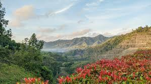
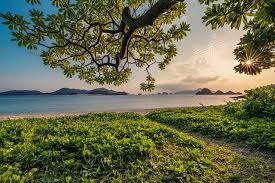
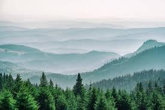

|  |
Senja di Ujung BukitFoto ini diambil di puncak Gunung Prau, menampilkan perpaduan warna langit sore yang memukau |
Profil Fotografer

|
Raka PradiptaFotografer profesional dengan pengalaman lebih dari 5 tahun dalam bidang fotografi alam dan street photography. |
Galeri Foto Alam
Embun di Hutan PinusPotret Keindahan pagi hari di tengah hutan pius, dengan cahaya lembut yang menembus kabut |
Galeri Foto Kota
|  |
Langkah di Tengah Lampu KotaMenangkap suasana malam yang ramai di pusat kota dengan cahaya neon yang kontras |
|  |
Kesibukan Pagi di Pasar LamaFoto dokumenter yang memperlihatkan aktivitas warga kota saat matahari baru terbit |